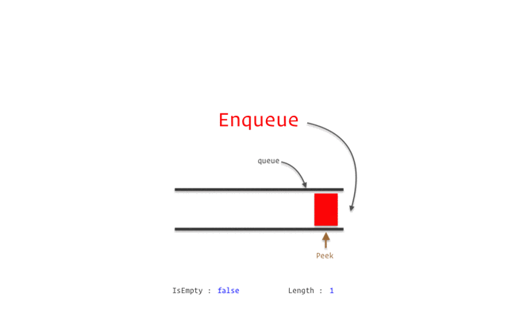

Level Up Your Coding Skills with Python Threading
Learn how to use queues, daemon threads, and events in a Machine Learning project.
February 27, 2025 · Python, Threading
Introduction
In most Machine Learning jobs, you won’t do research on improving some model architecture or designing a new loss function. Most of the time you must utilize what already exists and adapt it to your use case. So it is very important to optimize your project in terms of architectural design and implementation. Everything starts from there: you want optimal code, that is clean, reusable and runs as fast as possible. Threading is a Python built-in native library that people don’t use as often as they should.
About Threads
Threads are a way for a program to split itself into two or more simultaneously (or pseudo-simultaneously) running tasks … in general, a thread is contained inside a process and different threads in the same process share the same resources.
In this article, we don’t talk about multiprocessing, but the Python library for multiprocessing works very similarly to the multithreading one. In general:
- Multithreading is great for I/O bounds tasks, like calling an API within a for loops
- Multiprocessing is used for CPU-bound tasks, like multiple tabular data needing transformation at once
So if we want to run multiple things simultaneously, we can do so by using threads. The Python library to leverage threads is called threading.
Let’s start simple. I want two Python threads to print something at the same time. Let’s write two functions that contain a for loop to print some words.
def print_hello():
for x in range(1_000):
print("hello")
def print_world():
for x in range(1_000):
print("world")
Now if I run one after the other, I will see in my terminal 1.000 times the word “hello” followed by 1.000 “world”.
Let’s use threads instead. Let’s define two threads, and assign each thread to the functions defined above. Then we will start the threads. You should see the print of “hello” and “world” alternating on your terminal.
If before continuing the execution of your code you want to wait for the threads to finish, you can do so by utilizing: join().
import threding
thread_1 = threding.Thread(target = print_hello)
thread_2 = threding.Thread(target = print_world)
thread_1.start()
thread_2.start()
# wait for the threads to finish before continuing running the code
thread_1.join()
thread_2.join()
print("do other stuff")Lock Resources with Threads
Sometimes it can happen that two or more threads will edit the same resource, let’s say a variable containing a number.
One thread has a for loop that always adds one to that variable and the other subtracts one. If we run these threads together it will “always” have the value of zero (more or less). But we want to achieve a different behaviour. The first thread that will take possession of this variable needs to add or subtract 1 until it reaches some limit. Then it will release the variable and the other thread is free to get possession of the variable and perform its operations.
import threading
import time
x = 0
lock = threading.Lock()
def add_one():
global x, lock # use global to work with globa vars
lock.acquire()
while x < 10:
x = x + 1
print(x)
time.sleep(1)
print("reached maximum")
lock.release()
def subtract_one():
global x, lock
lock.acquire()
while > -10:
x = x -1
print(x)
time.sleep(1)
print("reached minimum")
lock.release()In the above code, we have two functions. Each will be run by one thread. Once the function starts it will lock the variable lock so the second thread cannot access it until the first is done.
thread_1 = threading.Thread(target = add_one)
thread_2 = threading.Thread(target = subtract_one)
thread_1.start()
thread_2.start()Lock using a Semaphore
We can achieve a similar result to what we have done above by using semaphores. Suppose we want a function to get accessed to a total number of threads at the same time. It means not all threads will get access to this function but only 5 for example. The other threads will need to wait until some of those 5 finish their computation to have access to the function and run the script. We can achieve this by using a semaphore and setting its value to 5. To start a thread with some argument we can use args in the Thread object.
import time
import threading
semaphore = threading.BoudnedSemaphore(value=5)
def func(thread_number):
print(f"{thread_number} is trying to access the resource")
semaphore.acquire()
print(f"{thread_number} granted access to the resource")
time.sleep(12) #fake some computation
print(f"{thread_number} is releasing resource")
semaphore.release()
if __name__ == "__main__":
for thread_number in range(10):
t = threading.Thread(target = func, args = (thread_number,)
t.start()
time.sleep(1)Events
Events are simple signalling mechanisms used to coordinate threads. You can think of an event as a flag that you can set or clear, and other threads can wait for it to be set before continuing their work.
For example in the following, the thread_1 that wants to perform the function “func” needs to wait for the users to enter “yes” and trigger the event to be able to finish the entire function.
import threading
event = threading.Event()
def func():
print("This event function is waiting to be triggered")
event.wait()
print("event is triggered, performing action now")
thread_1 = threading.Thread(target = func)
thread_1.start()
x = input("Do you want to trigger the event? \
")
if x == "yes":
event.set()
else
print("you chose not to trigger the event")
Daemon Threads
These are simply threads that run in the background. The main script terminates even if this background thread is still running. For example, you can use a daemon thread to continuously read from a file that gets updated in time.
Let’s write a script where a daemon thread continuously reads from a file and updates a string variable and another thread that prints to console the content of that variable.
import threading
import time
path = "myfile.txt"
text = ""
def read_from_file():
global path, text
while True:
with open(path, "r") as f:
text = f.read()
time.sleep(4)
def print_loop():
for x in range(30):
print(text)
time.sleep(1)
thread_1 = threading.Thread(target = read_from_file, daemon = True)
thread_2 = threading.Thread(target = print_loop)
thread_1.start()
thread_2.start()Queues
A queue is a collection of items that obeys the principle of first-in/first-out (FIFO). It is a method for handling data structures where the first element is processed first and the newest element is processed last .
We can also change the way we prioritize the order in which we process items from the collection. LIFO for example stands for Last-in/First-out. Or in general, we can have a priority queue where we can manually choose the order.

If multiple threads want to work on a list of items, let’s say the list of numbers, there could be the problem that 2 threads will perform computation on the same item. We want to avoid this. So we can have a shared queue among threads, and when a thread performs his computation on the item, this item gets removed from the queue. Let’s see an example.
import queue
q = queue.Queue() # it can also be a LifoQueue or PriorityQueue
number_list = [10, 20, 30, 40, 50, 60, 70, 80]
for number in number_list:
q.put(number)
print(q.get()) # -> 10
print(1.het()) # -> 20An example of Threads in a Machine Learning Project
Suppose you are working on a project where you need a data Streaming and preprocessing pipeline. This happens in a lot of projects with IoT devices or any sort of sensor. A background daemon thread can fetch and preprocess data continuously while the main thread focuses on inference.
For example in a simple case where I need to develop a real-time image classification system using my camera feed. I would set up my thread having 2 threads:
- Fetch images from the camera feed in real time.
- Pass the images to a machine learning model for inference.
import threading
import time
import queue
import random
# Sfake image classifier
def classify_image(image):
time.sleep(0.5) # fake the model inference time
return f"Classified {image}"
def camera_feed(image_queue, stop_event):
while not stop_event.is_set():
# Simulate capturing an image
image = f"Image_{random.randint(1, 100)}"
print(f"[Camera] Captured {image}")
image_queue.put(image)
time.sleep(1) # Simulate time between captures
def main_inference_loop(image_queue, stop_event):
while not stop_event.is_set() or not image_queue.empty():
try:
image = image_queue.get(timeout=1) # Fetch image from the queue
result = classify_image(image)
print(f"[Model] {result}")
except queue.Empty:
continue
if __name__ == "__main__":
image_queue = queue.Queue()
stop_event = threading.Event()
camera_thread = threading.Thread(target=camera_feed, args=(image_queue, stop_event), daemon=True)
camera_thread.start()
try:
main_inference_loop(image_queue, stop_event)
except KeyboardInterrupt:
print("Shutting down...")
stop_event.set() # Signal the camera thread to stop
finally:
camera_thread.join() # Ensure the camera thread terminates properly
print("All threads terminated.")In this simple example, we have:
- A daemon Thread: The camera input runs in the background, so it won’t block the program from exiting when the main thread completes.
- Event for Coordination: This
stop_eventallows the main thread to signal the daemon thread to terminate. - Queue for Communication: This
image_queueensures safe, thread-safe communication between the threads.
Final Thoughts
In this tutorial, I showed you how to make use of the threading library in Python, covering foundational concepts like locks, semaphores, and events, alongside more advanced use cases like daemon threads and queues.
I’d like to emphasise that threading isn’t just a technical skill, it’s more like a mindset that makes you write clean, efficient, and reusable code. Whenever you’re managing API calls, processing streams of sensor data, or building a real-time AI application, threading allows you to build systems that are robust, responsive, and ready to scale.
Follow me on Medium if you like this article! 😁
💼 Linkedin ️| 🐦 X (Twitter) | 💻 Website
This article has been published on Towards Data Science